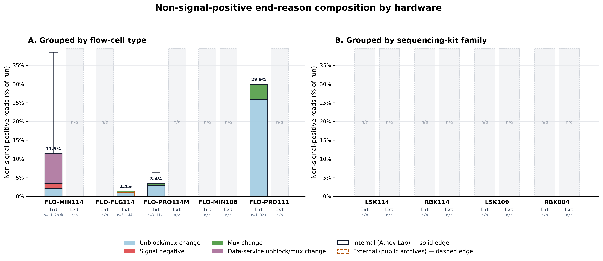

Companion repository generated from deposited Great Lakes recount outputs.
| Metric | Value |
|---|---|
| Internal runs | 14 |
| Internal reads total | 27,495,088 |
| ER21..ER25 status | full_raw_counted (see deposited context table) |

Primary deposited table: 1_experiment/tables/fig4_full_raw_experiment_table.csv
Unavailable-only raw inventory: 1_experiment/unresolved.json